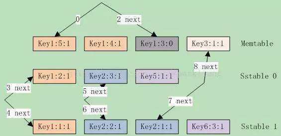

leveldb源码分析21
本系列《leveldb源码分析》共有22篇文章，这是第二十一篇
14 DB的查询与遍历之1
分析完如何打开和关闭db，本章就继续分析如何从db中根据key查询value，以及遍历整个db。
14.1 Get()
函数声明：StatusGet(const ReadOptions& options, const Slice& key, std::string* value) 从DB中查询key 对应的value，参数@options指定读取操作的选项，典型的如snapshot号，从指定的快照中读取。快照本质上就是一个sequence号，后面将单独在快照一章中分析。 下面就来分析下函数逻辑：
// S1 锁mutex，防止并发，如果指定option则尝试获取snapshot；然后增加MemTable的引用值。
MutexLock l(&mutex_);
SequenceNumber snapshot;
if (options.snapshot != NULL)
snapshot = reinterpret_cast<const SnapshotImpl*>(options.snapshot)->number_;
else snapshot = versions_->LastSequence(); // 取当前版本的最后Sequence
MemTable *mem = mem_, *imm = imm_;
Version* current = versions_->current();
mem->Ref();
if (imm != NULL) imm->Ref();
current->Ref();
// S2 从sstable文件和MemTable中读取时，释放锁mutex；之后再次锁mutex。
bool have_stat_update = false;
Version::GetStats stats;
{
mutex_.Unlock();
// 先从memtable中查询，再从immutable memtable中查询
LookupKey lkey(key, snapshot);
if (mem->Get(lkey, value, &s)) {
}
else if (imm != NULL && imm->Get(lkey, value, &s)) {
}
else { // 需要从sstable文件中查询
s = current->Get(options, lkey, value, &stats);
have_stat_update = true; // 记录之，用于compaction
}
mutex_.Lock();
}
// S3 如果是从sstable文件查询出来的，检查是否需要做compaction。最后把MemTable的引用计数减1。
if (have_stat_update &¤t->UpdateStats(stats)) {
MaybeScheduleCompaction();
}
mem->Unref();
if (imm != NULL)imm->Unref();
current->Unref();
查询是比较简单的操作，UpdateStats在前面Version一节已经分析过。
14.2 NewIterator()
函数声明：Iterator*NewIterator(const ReadOptions& options) 通过该函数生产了一个Iterator对象，调用这就可以基于该对象遍历db内容了。 函数很简单，调用两个函数创建了一个二级*Iterator。
Iterator* DBImpl::NewIterator(const ReadOptions& options) {
SequenceNumber latest_snapshot;
Iterator* internal_iter = NewInternalIterator(options, &latest_snapshot);
returnNewDBIterator(&dbname_, env_, user_comparator(), internal_iter,
(options.snapshot != NULL
? reinterpret_cast<constSnapshotImpl*>(options.snapshot)->number_
: latest_snapshot));
}
其中，函数NewDBIterator直接返回了一个DBIter指针
Iterator* NewDBIterator(const std::string* dbname, Env* env,
const Comparator*user_key_comparator, Iterator* internal_iter,
const SequenceNumber& sequence) {
return new DBIter(dbname, env, user_key_comparator, internal_iter, sequence);
}
函数NewInternalIterator有一些处理逻辑，就是收集所有能用到的iterator，生产一个Merging Iterator。这包括MemTable，Immutable MemTable，以及各sstable。
Iterator* DBImpl::NewInternalIterator(const ReadOptions& options,
SequenceNumber*latest_snapshot) {
IterState* cleanup = newIterState;
mutex_.Lock();
// 根据last sequence设置lastest snapshot，并收集所有的子iterator
*latest_snapshot = versions_->LastSequence();
std::vector<Iterator*>list;
list.push_back(mem_->NewIterator()); // >memtable
mem_->Ref();
if (imm_ != NULL) {
list.push_back(imm_->NewIterator()); // >immutablememtable
imm_->Ref();
}
versions_->current()->AddIterators(options, &list); // >current的所有sstable
Iterator* internal_iter = NewMergingIterator(&internal_comparator_, &list[0], list.size());
versions_->current()->Ref();
// 注册清理机制
cleanup->mu = &mutex_;
cleanup->mem = mem_;
cleanup->imm = imm_;
cleanup->version = versions_->current();
internal_iter->RegisterCleanup(CleanupIteratorState, cleanup, NULL);
mutex_.Unlock();
return internal_iter;
}
这个清理函数CleanupIteratorState是很简单的，对注册的对象做一下Unref操作即可。
static void CleanupIteratorState(void* arg1, void* arg2) {
IterState* state = reinterpret_cast<IterState*>(arg1);
state->mu->Lock();
state->mem->Unref();
if (state->imm != NULL)state->imm->Unref();
state->version->Unref();
state->mu->Unlock();
delete state;
}
可见对于db的遍历依赖于DBIter和Merging Iterator这两个迭代器，它们都是Iterator接口的实现子类。
14.3 MergingIterator
MergingIterator是一个合并迭代器，它内部使用了一组自Iterator，保存在其成员数组children_中。如上面的函数NewInternalIterator，包括memtable，immutable memtable，以及各sstable文件；它所做的就是根据调用者指定的key和sequence，从这些Iterator中找到合适的记录。 在分析其Iterator接口之前，先来看看两个辅助函数FindSmallest和FindLargest。FindSmallest从0开始向后遍历内部Iterator数组，找到key最小的Iterator，并设置到current；FindLargest从最后一个向前遍历内部Iterator数组，找到key最大的Iterator，并设置到current； MergingIterator还定义了两个移动方向：kForward，向前移动；kReverse，向后移动。
14.3.1 Get系接口
下面就把其接口拖出来一个一个分析，首先是简单接口，key和value都是返回current的值，current是当前seek到的Iterator位置。
virtual Slice key() const {
assert(Valid());
return current_->key();
}
virtual Slice value() const {
assert(Valid());
return current_->value();
}
virtual Status status() const {
Status status;
for (int i = 0; i < n_; i++) { // 只有所有内部Iterator都ok时，才返回ok
status = children_[i].status();
if (!status.ok()) break;
}
return status;
}
14.3.2 Seek系接口
然后是几个seek系的函数，也比较简单，都是依次调用内部Iterator的seek系函数。然后做merge，对于Seek和SeekToFirst都调用FindSmallest；对于SeekToLast调用FindLargest。
virtual void SeekToFirst() {
for (int i = 0; i < n_; i++) children_[i].SeekToFirst();
FindSmallest();
direction_ = kForward;
}
virtual void SeekToLast() {
for (int i = 0; i < n_; i++) children_[i].SeekToLast();
FindLargest();
direction_ = kReverse;
}
virtual void Seek(constSlice& target) {
for (int i = 0; i < n_; i++) children_[i].Seek(target);
FindSmallest();
direction_ = kForward;
}
14.3.3 逐步移动
最后就是Next和Prev函数，完成迭代遍历。这可能会有点绕。下面分别来说明。 首先，在Next移动时，如果当前direction不是kForward的，也就是上一次调用了Prev或者SeekToLast函数，就需要先调整除current之外的所有iterator，为什么要做这种调整呢？啰嗦一点，考虑如下的场景，如图14.3-1所示。

图14.3-1 Next的移动
当前direction为kReverse，并且有：Current = memtable Iterator。各Iterator位置为：{memtable, stable 0, sstable1} ={ key3:1:1, key2:3:1, key2:1:1}，这符合prev操作的largest key要求。 注：需要说明下，对于每个update操作，leveldb都会赋予一个全局唯一的sequence号，且是递增的。例子中的sequence号可理解为每个key的相对值，后面也是如此。 接下来我们来分析Prev移动的操作。 第一次Prev，current(memtable iterator)移动到key1:3:0上，3者中最大者变成sstable0；因此current修改为sstable0； 第二次Prev，current(sstable0 Iterator)移动到key1:2:1上，3者中最大者变成sstable1；因此current修改为sstable1: 此时各Iterator的位置为{memtable, sstable 0, sstable1} = { key1:3:0, key1:2:1, key2:2:1}，并且current=sstable1。 接下来再调用Next，显然当前Key()为key2:2:1，综合考虑3个iterator，两次Next()的调用结果应该是key2:1:1和key3:1:1。而memtable和sstable0指向的key却是key1:3:0和key1:2:1，这时就需要调整memtable和sstable0了，使他们都定位到Key()之后，也就是key3:1:1和key2:3:1上。 然后current(current1)Next移动到key2:1:1上。这就是Next时的调整逻辑，同理，对于Prev也有相同的调整逻辑。代码如下：
virtual void Next() {
assert(Valid());
// 确保所有的子Iterator都定位在key()之后.
// 如果我们在正向移动，对于除current_外的所有子Iterator这点已然成立
// 因为current_是最小的子Iterator，并且key() = current_->key()。
// 否则，我们需要明确设置其它的子Iterator
if (direction_ != kForward) {
for (int i = 0; i < n_; i++) { // 把所有current之外的Iterator定位到key()之后
IteratorWrapper* child = &children_[i];
if (child != current_) {
child->Seek(key());
if (child->Valid() && comparator_->Compare(key(), child->key()) == 0)
child->Next(); // key等于current_->key()的，再向后移动一位
}
}
direction_ = kForward;
}
// current也向后移一位，然后再查找key最小的Iterator
current_->Next();
FindSmallest();
}
virtual void Prev() {
assert(Valid());
// 确保所有的子Iterator都定位在key()之前.
// 如果我们在逆向移动，对于除current_外的所有子Iterator这点已然成立
// 因为current_是最大的，并且key() = current_->key()
// 否则，我们需要明确设置其它的子Iterator
if (direction_ != kReverse) {
for (int i = 0; i < n_; i++) {
IteratorWrapper* child = &children_[i];
if (child != current_) {
child->Seek(key());
if (child->Valid()) {
// child位于>=key()的第一个entry上，prev移动一位到<key()
child->Prev();
}
else { // child所有的entry都 < key()，直接seek到last即可
child->SeekToLast();
}
}
}
direction_ = kReverse;
}
//current也向前移一位，然后再查找key最大的Iterator
current_->Prev();
FindLargest();
}
这就是MergingIterator的全部代码逻辑了，每次Next或者Prev移动时，都要重新遍历所有的子Iterator以找到key最小或最大的Iterator作为current_。这就是merge的语义所在了。 但是它没有考虑到删除标记等问题，因此直接使用MergingIterator是不能正确的遍历DB的，这些问题留待给DBIter来解决。